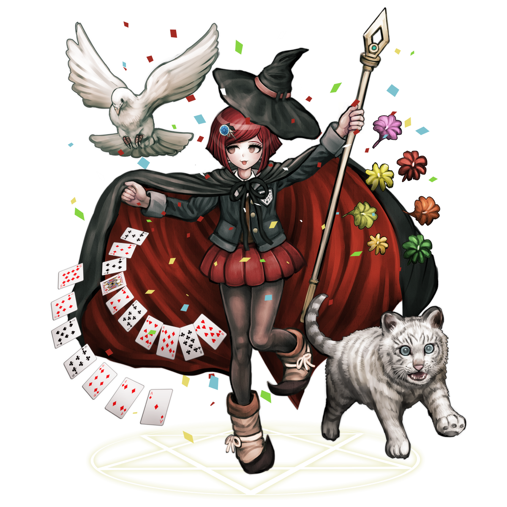

Himiko Yumeno
Himiko Yumeno (夢野 秘密子) is a student in the Ultimate Academy for Gifted Juveniles and a participant of the Killing School Semester featured in Danganronpa V3: Killing Harmony. Her title is the Ultimate Magician (超高校級の「マジシャン」 lit. Super High School Level Magician); however she claims her "true", unofficial title is the Ultimate Mage (超高校級の「魔法使い」 lit. Super High School Level Mage).
